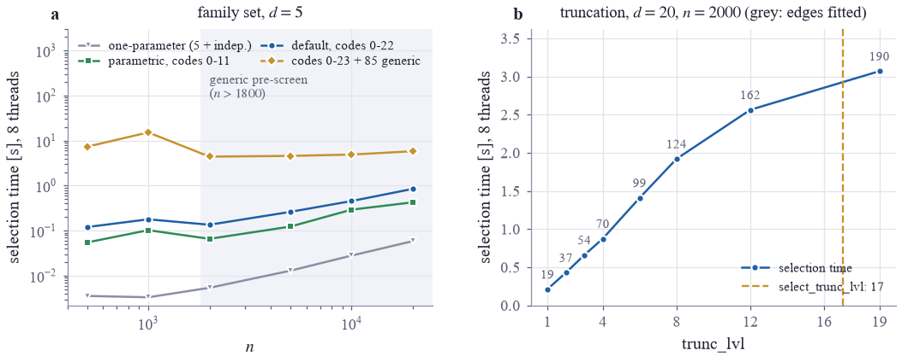
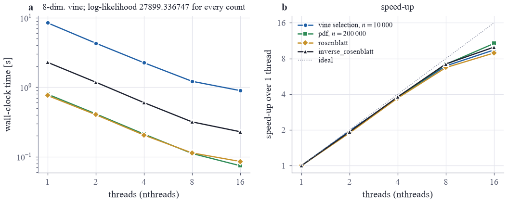

Performance and threads¶
fortvine is parallelised with OpenMP and written so that results do not depend on the number of threads. This page explains how the thread count is chosen, what runs in parallel, how to build for speed, and which modelling options cost the most.
How many threads¶
Every routine that can run in parallel resolves its thread count with fv_threads(req):
req > 0(fromctl%nthreadsor annthreadsargument): exactly that many threads;- otherwise the environment variable
FORTVINE_THREADS, if it holds a positive integer; - otherwise half the number of logical processors reported by OpenMP
(
max(1, omp_get_num_procs() / 2)), and 1 if the library was built without OpenMP.
Half the logical CPUs is a deliberate default: on machines with simultaneous multithreading it usually equals the number of physical cores, which is where the likelihood loops stop scaling, and it leaves the rest of the machine responsive.
| routine | thread count taken from |
|---|---|
fv_bicop%fit, %select, fv_vinecop%select, %relax |
ctl%nthreads |
fv_vinecop%pdf, %pdf_grid, %rosenblatt, %inverse_rosenblatt, %simulate |
optional nthreads argument |
fv_tau_mat, fv_pseudo_obs_nd |
optional nthreads argument |
fv_bicop%pdf, %logpdf, %hfunc1, %hfunc2, %hinv1, %hinv2 |
fv_threads() (environment or default); parallel only above 4096 points |
fv_bicop%cdf |
the OpenMP default team (OMP_NUM_THREADS), not fv_threads |
| C interface | the nthreads argument of each routine |
What runs in parallel¶
| operation | parallel over |
|---|---|
| pair-copula evaluation (pdf, h-functions, inverses) | observations (above 4096) |
vine pdf, pdf_grid, Rosenblatt, inverse Rosenblatt |
observations |
| one likelihood pass of a fit | 128 fixed blocks of observations |
fv_bicop%select |
candidates (family, rotation) |
| vine selection, per tree | tree criteria of candidate edges, then all (edge, candidate) fits as one job list, then the h-functions of the selected edges |
| Kendall's \(\tau\) matrix | variable pairs |
| pseudo-observations | columns |
In selection the parallelism is nested. The outer team runs the (edge, candidate) jobs; a job
whose likelihood passes are large enough can borrow idle threads from a shared pool (at most
one per 2000 observations, a fair share of what is idle, reserved atomically so the budget in
nthreads is never exceeded). Short jobs run single-threaded; this keeps all threads busy
both at the start of a tree, when there are many jobs, and at its end, when a few slow fits
remain. Jobs are ordered cheapest-first and then longest-first, see
Racing.
Results do not depend on the thread count¶
Every likelihood pass sums the contributions of 128 fixed blocks of observations in a fixed
order, whatever the number of threads, so log-likelihoods, scores and therefore the fitted
parameters and the selected model are bit-identical for any thread count (see the example
below). The randomisation of the discrete Rosenblatt transform uses a counter-based hash, so
it is reproducible as well. simulate uses the Fortran intrinsic random generator once, before
the parallel part, and is reproducible for a given seed.
Building for speed¶
build.sh compiles with
plus -cpp (the family formulas are included through the preprocessor) and -fPIC. Notes:
-march=nativetunes for the build machine; the library may not run on older CPUs. For a library you distribute, override it:FFLAGS="-O3 -funroll-loops -fno-math-errno -ffree-line-length-none -fopenmp" bash build.sh.- Without
-fopenmpthe library builds serially (all OpenMP code sits behind!$sentinels) andfv_threads()returns 1. - Do not add
-ffast-mathor-ffinite-math-only: the code tests for NaN and infinity to reject failed evaluations (for examplex /= x), and those tests are removed under finite-math assumptions. - The
fpm.tomlmanifest builds the same sources withfpm build; pass the flags with--flag.
Setting the environment variable FORTVINE_PROFILE (to any value) makes vine selection print
the time spent per tree on criteria, candidates, fits and h-functions, and the mBICv of every
threshold pass. It is meant for diagnosing slow selections.
What costs time¶
Selection time is roughly (number of edges) \(\times\) (candidates per edge) \(\times\) (cost per candidate). Each factor has a knob.
Edges: truncate. A vine has \(d(d-1)/2\) edges, but trees beyond the first few are often
close to independence. ctl%trunc_lvl = k fits only \(\sum_{t \le k} (d - t)\) edges;
ctl%select_trunc = .true. stops automatically when a tree no longer pays for itself;
ctl%threshold (or select_threshold) turns weak edges into independence without fitting
them. For \(d = 50\), truncating after 5 trees keeps 235 of the 1225 edges.
Candidates: keep the family set focused. The default set has 23 families; adding all 85
generic families multiplies the candidate count by almost five. The pre-screen of generic
candidates (four per edge reach the full data) recovers most of that cost for \(n > 1800\), but
not all. Keep preselect = .true.: whenever the tails of a pair are clearly asymmetric it
drops the rotations of a family that put its tail dependence in the wrong corner, before any
fit.
Cost per candidate.
- The five closed-form one-parameter families (Gaussian, Clayton, Gumbel, Frank, Joe) take a couple of passes over the data and are essentially free.
- Two-parameter BB-type families need a start grid and a few Newton passes; with \(n > 1800\) most of the work is done on a 600-row subsample.
- The Student copula (profile in \(\nu\)) and t-EV are the most expensive parametric fits; t-EV is not in the default set for that reason.
- TLL and Bernstein cost about as much as a slow parametric family, see Nonparametric.
- Discrete margins make every multi-parameter fit derivative-free and every observation two to four copula evaluations, see Discrete data.
Repeated work: cache it. If you select several times on the same data (comparing criteria, thresholds, family sets), enable the fit cache; identical pair fits are then looked up instead of recomputed.
Prediction. For predictive densities on a grid of one variable, use pdf_grid instead of
calling pdf on an expanded array; edges that do not involve the varying variable are
evaluated once per sample.

Example: thread scaling¶
program perf_demo
use fortvine_api
use iso_fortran_env, only: int64
implicit none
integer, parameter :: dp = kind(1.0d0), n = 10000, d = 8
type(fv_vinecop) :: truth, vc
type(fv_controls) :: ctl
real(dp) :: u(n, d)
integer(int64) :: t0, t1, rate
integer :: e, k, nt(4) = [1, 2, 4, 8]
call truth%set_dvine([(e, e = 1, d)])
truth%fam(1:d - 1, 1) = FV_GUMBEL; truth%par(1, 1:d - 1, 1) = 1.8_dp
truth%fam(1:d - 2, 2) = FV_CLAYTON; truth%par(1, 1:d - 2, 2) = 0.8_dp
call truth%simulate(n, u, seed=9)
do k = 1, size(nt)
ctl%nthreads = nt(k)
call system_clock(t0, rate)
call vc%select(u, ctl, fixed=.false.)
call system_clock(t1)
print '(a,i2,a,f7.2,a,f14.6)', 'nthreads', nt(k), ':', real(t1 - t0, dp) / rate, ' s loglik', vc%loglik(u)
end do
end program perf_demo
Output (an 8-dimensional vine, 10 000 observations, default family set; timings from one test
machine, compiled with -O3 -march=native):
nthreads 1: 10.17 s loglik 27197.910281
nthreads 2: 5.13 s loglik 27197.910281
nthreads 4: 2.61 s loglik 27197.910281
nthreads 8: 1.40 s loglik 27197.910281
The selected vine, and with it the log-likelihood to the last printed digit, is the same for every thread count.
